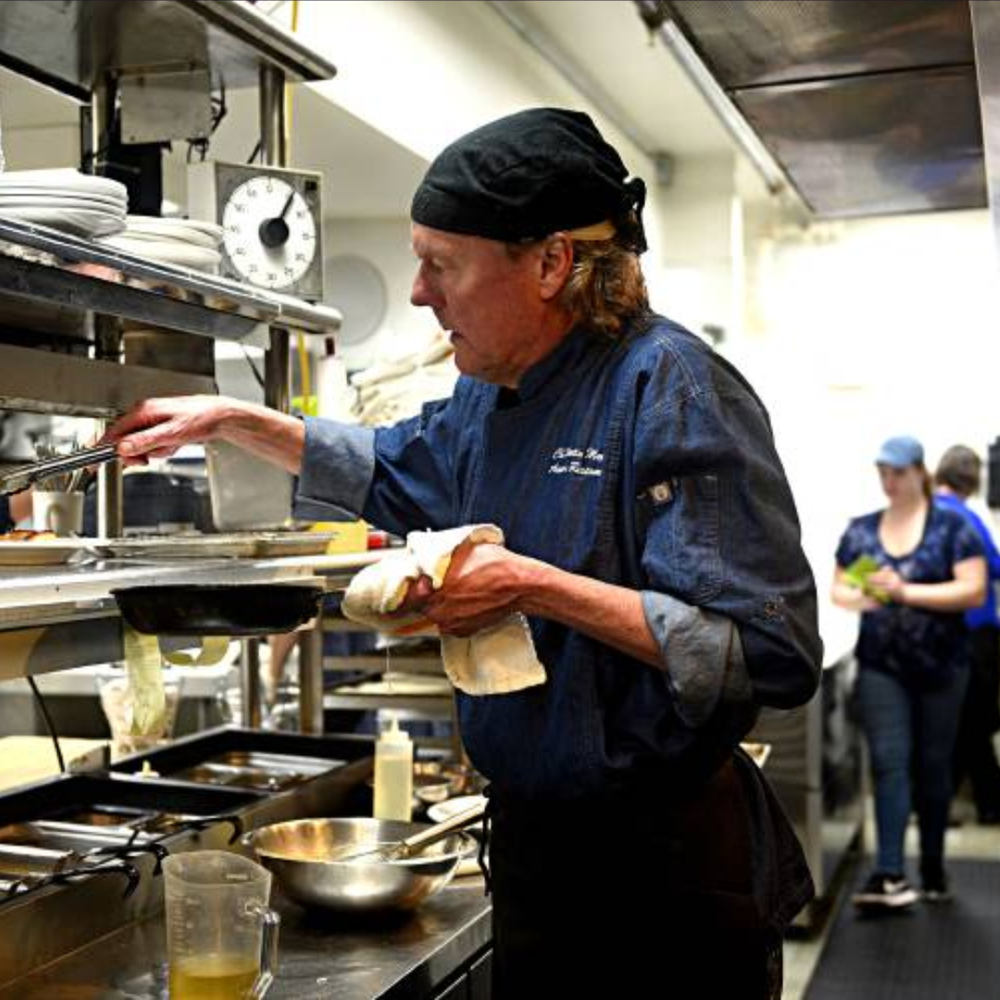
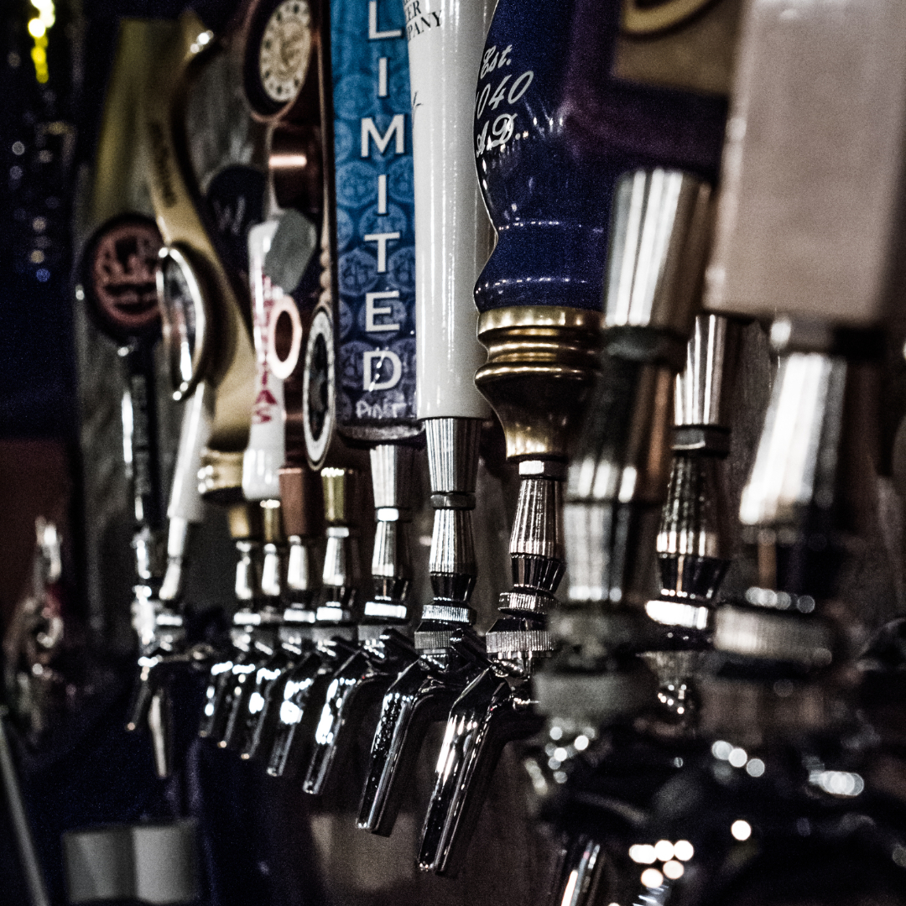
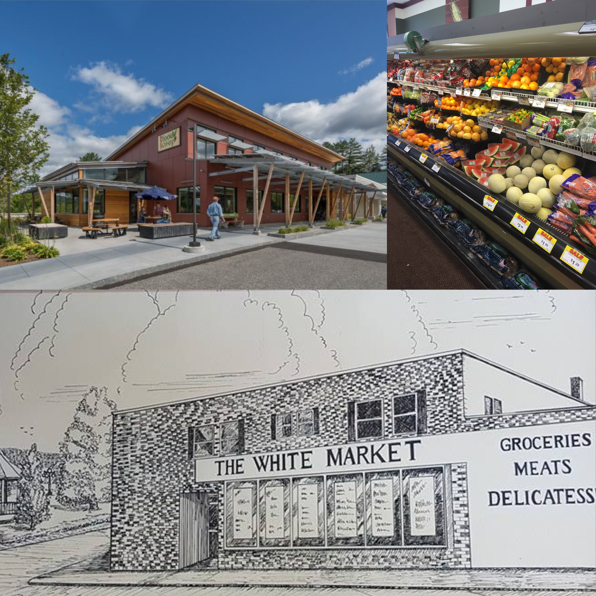

Eating and Drinking Guide
This guide includes the Carpenter-Israel family's favorite restaurants close to Waterford in both Vermont and New Hampshire. Though this region is not a food mecca (i.e., stick to this list!), there are a select number of really great places. We also have included the best local grocery and farmer's stand options.

New Hampshire
| Restaurant | Description |
|---|---|
| Schilling Beer Company | Craft Beer & Great Pizza |
| Timber Alley | Quirky w/ Upscale Food and Price |
| Beal House Inn | Cozy Tavern with Good Food |
| Chang Thai | Thai Food |
| Little Freehouse | Craft Beer & Pub Food |
| Goldhouse Pizza | The "Local's Favorita" Pizza Joint |
| Littleton Diner | Local Diner and Presidential Campaign Photo Op |
| Topic of the Town | Cheap Local Dinner |
| Inkwell | Littleton's Best Coffee Shop |
| Polly's Pancake Parlor | A White Mountain Institution for Breakfast - Expect to Wait |

Vermont
| Restaurant | Description |
|---|---|
| Kingdom Taproom | Craft Beer in a Tavern with Good Food |
| Kham's Thai | St. Jay's Best Thai Food |
| Catina Gerardo | Italian Cuisine |
| Tim's Deli | Local Dive Deli with Great Sandwiches |
| Riley's Fish Shack | Seafood Shack and Dairy Bar |
| Anthony's Diner | St. Jay's Favorite Local Diner |

Farmer's Markets
| Market | Description |
|---|---|
| St. Johnsbury Farmer's Market | Full Market in St. Johnsbury on Saturdays |
| Littleton Farmer's Market | Littleton's Farmers Market on Sundays (June-October) |
| 4 Corner's Farm | Farm Stand Open Daily in South Newbury, VT |
| Gingue Farm | Carpenter Family Favorite in Waterford w/ Great Corn |

Grocery Store
| Store | Description |
|---|---|
| Littleton Coop | Member Owned Grocery with Local Produce & Much More |
| Shaw's | Large Chain Across the Street from Walmart in Littleton |
| The White Market | St. Jay's Local Grocery Store |